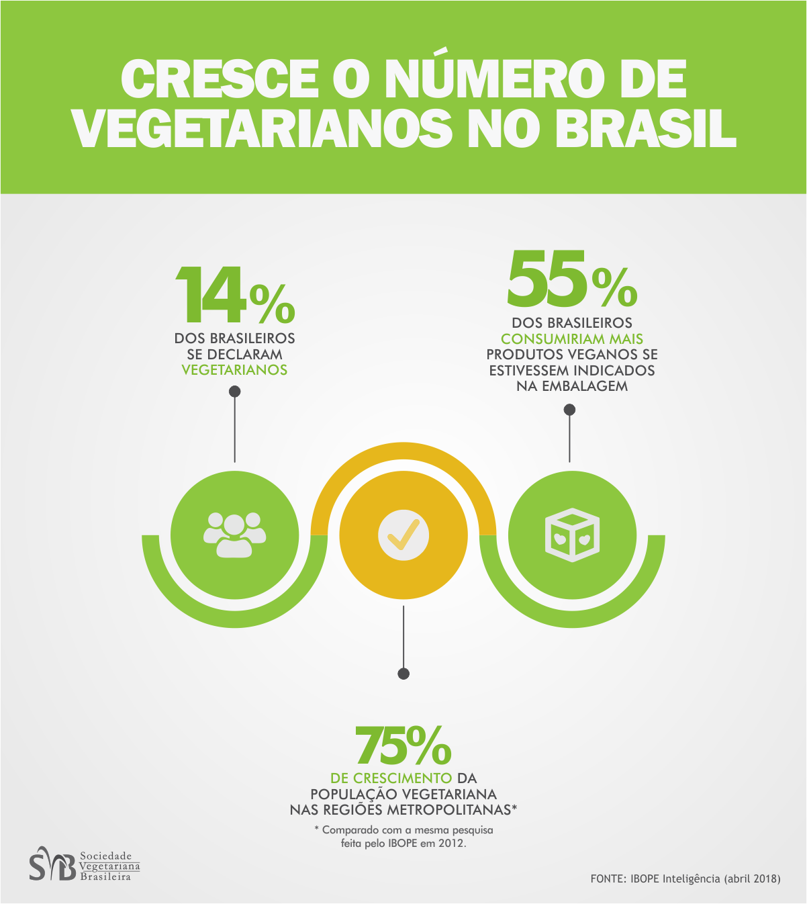

Natallia Bonadia
Vegetarianismo
Vegetariana há quase 2 anos, decidi parar de comer carne animal por respeito ao meio ambiente e aos animais.
Para mais informações sobre o vegetarianismo ou veganismo acesse o site da SVB - Sociedade Vegetariana Brasileira.
